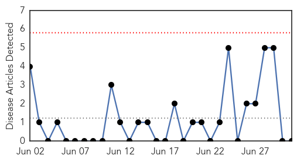

Cholera
30-Day Web Trend
0 alerts, 0 warnings

30-Day Twitter Trend
0 alerts, 0 warnings

Article Locations

Article Confidences

Top Articles:
- 0.998
- 2 suspected cholera cases being investigated in Salt Lake County
- 0.998
- Cholera eradication in Haiti will take ‘some years,’ says outgoing UN coordinator
- 0.988
- Remember Haiti? Now UN Says That Cholera Eradication Will Take ‘Some Years’
- 0.970
- Cholera eradication in Haiti will take 'some years,' says outgoing UN coordinator
- 0.963
- Cholera Hits Ashanti Region – Daily Guide Ghana
- 0.956
- Cholera outbreak in South Sudan’s capital threatens to bring new waves of suffering
- 0.956
- Cholera outbreak in Three Pagodas Pass village
- 0.899
- Cholera outbreak kills 15 dead in north central Nigeria
- 0.868
- The Scientist Magazine®
- 0.641
- Cameroon: Cholera DREF Final Report (MDRCM018) - Cameroon
- 0.594
- Viet Nam: Closer to bringing drinking water and sanitation to all
Top Tweets:
-
No tweets found for Jul 01, 2015
Pertussis
30-Day Web Trend
0 alerts, 0 warnings

30-Day Twitter Trend
0 alerts, 0 warnings

Article Locations

Article Confidences

Top Articles:
-
No articles found for Jul 01, 2015
Top Tweets:
-
No tweets found for Jul 01, 2015